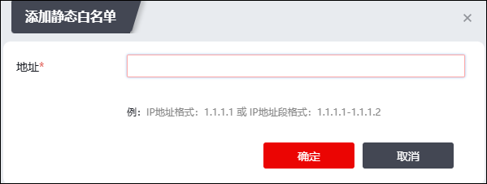
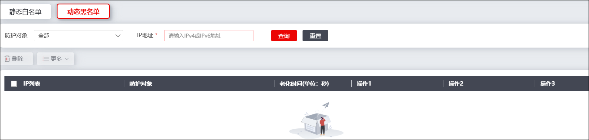

防火墙的DOS功能对黑/白名单中的数据报文会进行特殊处理。当NGFW检测到源IP地址处于黑名单中的数据报文时，会跳过深度检测和甄别直接丢弃；检测到源IP地址处于白名单中的数据报文时，该报文除受DOS防护策略中IP目的限速规则控制，不经过任何DOS安全引擎检测，直接放行。DOS功能支持动态黑名单和静态白名单。
l动态黑名单
动态黑名单由防火墙的DOS功能自动生成和自动更新。报文成功匹配动作为加入黑名单的防护策略时，该报文的源IP地址则被自动加入到动态黑名单中。此外，如果报文满足防护策略的所有认证机制时，该报文的源IP地址被自动加入到静态白名单中。但当动态黑名单超时后，防火墙会自动将动态黑名单删除，关于动态黑名单超时时间的配置具体请参见 基本信息。注意：动态黑名单并非对用户访问所有防护对象有效，仅对访问生成该黑名单的防护策略对应的防护对象起作用，即为局部黑名单。
l静态白名单
静态白名单需由管理员手工配置。NGFW的DOS模块支持全局白名单，白名单作用于所有防护对象。
本节介绍如何配置全局静态白名单，以及如何查看动态黑名单。
| 步骤1 | 配置静态白名单。 |
1）选择 激活“静态白名单”页签。
2）点击【添加】，弹出“添加静态白名单”窗口，如下图所示。

3）输入IP地址，点击【确定】按钮完成静态白名单的创建。
| 步骤2 | 查看动态黑名单。 |
选择 激活“动态黑名单”页签，如下图所示。

界面中显示动态黑名单的IP地址、生成黑名单的防护策略、以及黑名单老化时间等信息；选中需要删除的动态黑名单项，再点击“删除”，即可删除对应动态黑名单项。